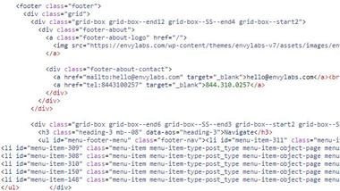
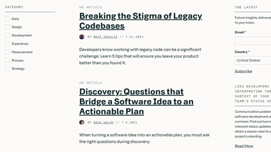
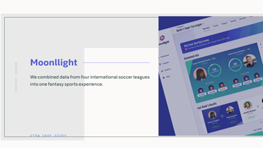

Code
Envy Labs seems to largely be structured upon the CSS grid system. They make good use of HTML markup to provide context about their content with different categories used on their site including a header, footer, main, and navigation.
User Interface - UI
The UI for Envy Labs is visually appealing and implements a variety of design techniques. Content is broken down in a way that makes logical sense and is grouped by related content. One aspect of the user interface that I thought could be improved however is the heading on the pages. Sometimes the heading design takes up the full-width and other times it takes up partial width (Insights) or isn’t present at all (Contact). Consistency across pages would help with branding and give the site a similar feel no matter what part a user is on.
User Experience - UX
Envy Labs provides a user experience that is easy to use, and the site is laid out in a way that is easy to understand immediately to the user. Having relevant case studies included on content explaining what Envy Labs does provides a quick and simple way for users to access real-world examples of what Envy Labs has to offer, adding a layer of simplicity to the experience. The Insights page provides an intuitive filtering menu based upon category. One way user experience could be improved is by providing real-time validation on the contact us page.
Summary
Envy Labs is a visually appealing, user-friendly site that implements a lot of strong design principles. Their code is written to be search engine friendly and provides meaningful context relating to their content. The few drawbacks to their design don’t necessarily take anything away from the website, simply would be additive to what is already a well-developed site.